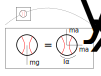

import numpy as np
import matplotlib.pyplot as plt
plt.style.use('fivethirtyeight')
The Newton-Euler equations¶
Engineering mechanics uses 6 equations of motion to describe the relationship between applied forces and moments to the motion of rigid bodies. These 6 equations are the Newton-Euler kinetic equations, you can write the equations succinctly as vector-relationships between forces and acceleration as
\(\mathbf{F} = m\mathbf{a}\) equations 1-3
\(\mathbf{M}_{G} = \frac{d}{dt}\mathbf{h}_G\) equations 4-6
where \(\mathbf{F}\) is the resultant sum of forces on a rigid body, \(\mathbf{M}_{G}\) is the resultant sum of moments about a rigid body’s center of mass, and $\mathbf{h}_G is the angular momentum of a rigid body. Angular momentum is a description of the inertia in a rigid body due to spinning. To start, we are limiting our study to 3-DOF planar rigid body motion. This simplifies the Newton-Euler equation to 3 coupled differential equations as such,
\(\mathbf{F}\cdot\hat{e}_1 = m\mathbf{a}\cdot\hat{e}_1\)
\(\mathbf{F}\cdot\hat{e}_2 = m\mathbf{a}\cdot\hat{e}_2\)
\(\mathbf{M}_{G}\cdot\hat{e}_3 = I_{zz}\alpha\)
where \(\hat{e}_{1},~\hat{e}_{2},\) and \(\hat{e}_{3}\) are three orthogonal unit vectors, \(I_{zz}\) is the moment of inertia for the rigid body, and \(\alpha\) is the angular acceleration of the rigid body. Every rigid body in an engineering system can be described by the Newton-Euler equations.
Note: The mass of an object describes how difficult it is to move it in a straight line. The moment of inertia describes how difficult it is to rotate an object. The units for moment of inertia are \(kg-m^2\) (in SI). A quick explanation of moment of inertia is that it is the variance in the center of mass.
Example¶
Consider a baseball that is thrown. It has an initial velocity of 6 m/s at an angle of 60\(^o\) from the ground and its rotating 10 times/sec. Determine the acceleration of the baseball and its maximum height.
In this example, consider the three planar Newton-Euler equations by first drawing a Free Body Diagram as seen below.

The force of gravity acts over the entire object equally and no other forces are present. Now, write out the 3 Newton-Euler equations
Note: You will include force of drag, but for now just consider the motion without drag.
\(0 = m\ddot{x}\)
\(-mg = m\ddot{y}\)
\(0 = I_{zz}\ddot{\theta}\)
Integrating the three equations, you get three equations to describe the position and angle of the baseball.
\(x(t) = x(0)+6\cos\frac{\pi}{3}t\)
\(y(t) = y(0)+6\sin\frac{\pi}{3}t-\frac{gt^2}{2}\)
\(\theta(t) = \theta(0)+10\frac{rot}{s}\frac{2\pi~rad}{rot}t\)
t = np.linspace(0,1.1,10)
x = 6*np.cos(np.pi/3)*t
y = 6*np.sin(np.pi/3)*t-9.81*t**2/2
theta = 10*2*np.pi*t
plt.plot(x,y,'o')
plt.xlabel('distance (m)')
plt.ylabel('height (m)');
A freefalling object does not have a force in the x-direction or an applied moment, so the angular acceleration is 0 rad/s/s. The ball will continue spinning until an external moment is applied e.g. another player’s baseball mitt.
Describing kinetic properties¶
The motion of the baseball, its path and its rotation, describes the kinematics or geometry of motion. You can also use kinetic properties to describe moving object. The Newton-Euler create quantitative comparisons between kinematic and kinetic properties.
The first kinetic property is the Forces acting on the baseball:
\(\mathbf{F} = 0\hat{i} - mg\hat{j}\).
where \(\mathbf{F}\) is the force acting on the baseball. A force is a vector quantity with magnitude and direction or another way to state this is that it has components along each unit vector.